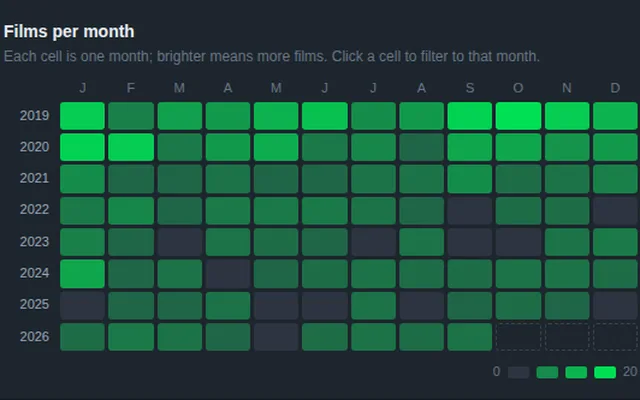
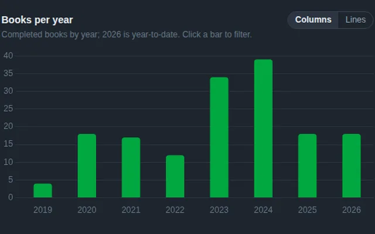
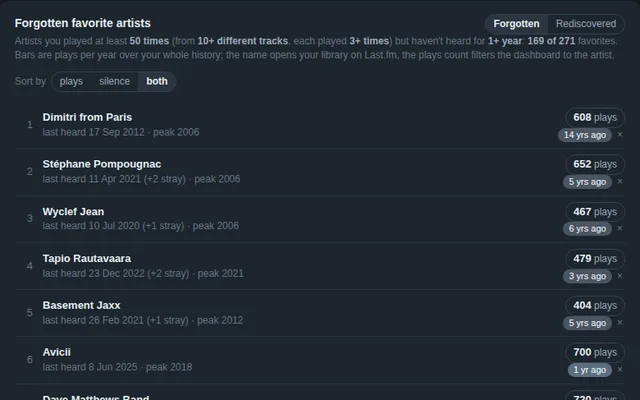

I've created tools and dashboards for various interests of mine. These can be downloaded, copied and adapted to your use.
Every dashboard here is a single HTML file that reads a CSV or JSON next to it and draws everything in the browser — no backend or tracking.
The diaries refresh themselves from the services' data through scheduled GitHub Actions; the rest are built or updated by hand. The three diaries also come as drop-in viewers: open one, drop your own export (e.g. Spotify) on it, and you get the same dashboard for your data without uploading anything.
Everything is in the open: each folder has the page, its data file and a README on how the data is refreshed — take any of them and have your own tools (or your AI agent) rebuild it around your data. The shared look is written up in STYLE.md. Older work lives on Tableau Public, further down.

The Letterboxd diary since 2019: what got watched, when and where, ratings by year and decade, theater vs. home, festival runs, written reviews.
Try it with your own data Letterboxd export
The StoryGraph library: books finished per year and month, ratings, moods, currently reading, recent reviews.
Try it with your own data StoryGraph or Goodreads export
Twenty years of Last.fm scrobbles, with the Spotify gaps filled in. Highlights the favorite artists and tracks you haven't heard for a long time — and the ones you've come back to — plus when each artist was last heard, how favorites were made, and listening by year, month and hour.
Try it with your own data Last.fm, Spotify or Apple Music